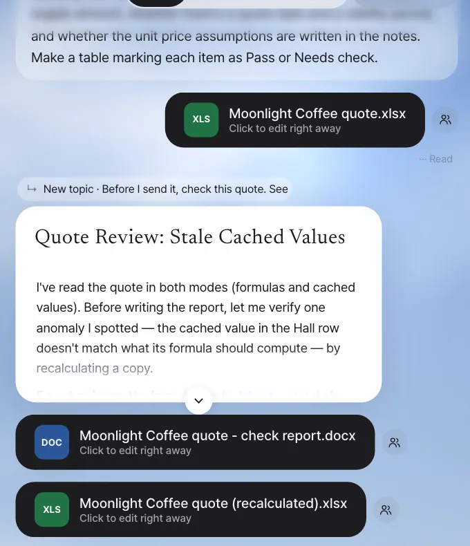
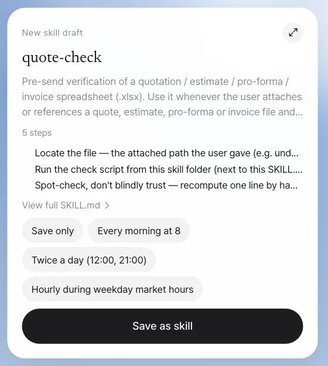
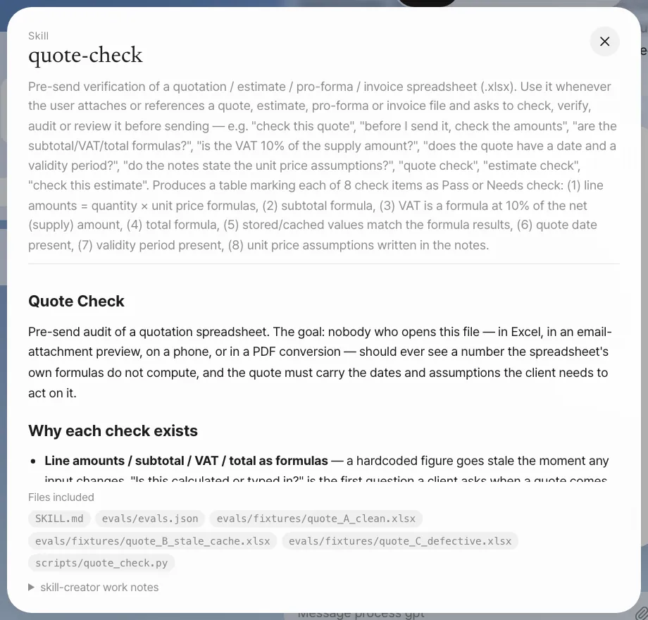
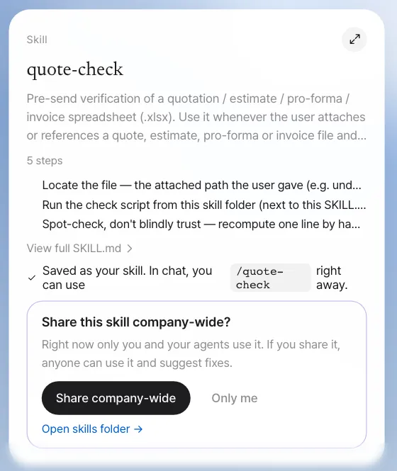
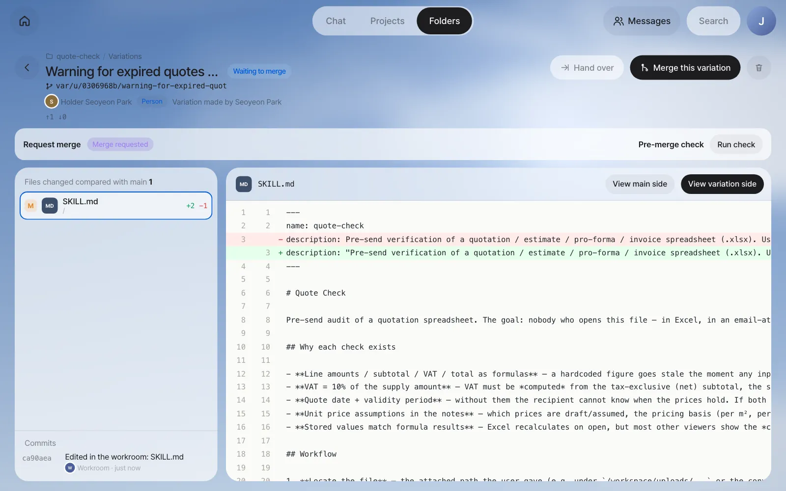
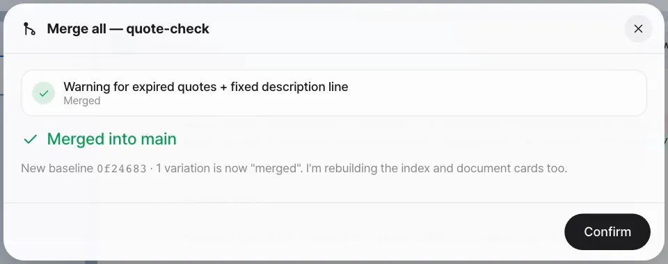
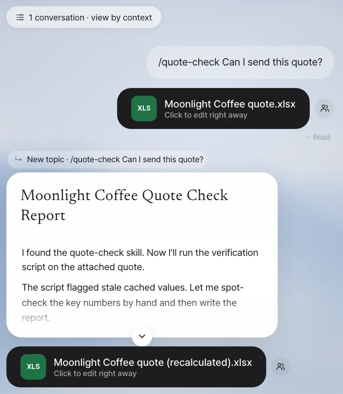

To have a conversation that went well happen the same way next time, save it as a skill. You'll run a pre-send quote check once by chatting, turn that method into the
quote-checkskill and use it again, share it with the whole team, and then compare, test and merge an improvement Seoyeon Park proposes.
What a skill is#
In Chapter 9, right before replying, the assistant told you to double-check the quote's validity period. You need to do this check every time you send a quote. But if you explain "whether the amounts are formulas, whether VAT is 10%, whether there's a validity period…" from scratch every time, items get missed, and each person checks against different standards.
A skill is a folder that bundles a document describing how to do one job (SKILL.md) with the scripts and examples used for that job. When a request matches a skill's description, the assistant follows its procedure. Lite uses Process GPT agent skills as they are, so skills you make in Lite can also be used in the steps of Process GPT processes.
| Plain conversation | Skill |
|---|---|
| You have to explain every time | One line, /quote-check, or picked automatically from "Check this quote" |
| Results differ by person and by day | The same procedure, the same check items |
| Only you know it | Shared with the team, refined together through proposed improvements |
| Can't run at a set time | Runs on a schedule (mission) (Chapter 11) |
Try it 1 — first, once by chatting#
It's best to start a skill from a conversation that went well. Attach Moonlight Coffee quote.xlsx from Chapter 9 (the saved copy with the hall price changed) with the paper clip button in the input box, and type:
Before I send it, check this quote. See whether the amounts, subtotal, VAT and total are formulas, whether VAT is 10% of the supply amount, whether there's a quote date and a validity period, and whether the unit price assumptions are written in the notes. Make a table marking each item as Pass or Needs check.
In our run (about 3 and a half minutes), the assistant read the file both as formulas and as stored values and came back with 7 Pass / 1 Needs check, beginning with "don't send it yet". It found the very slip the reply draft in Chapter 9 had made.
| # | Check item | Result | Details (summary of our run's original) |
|---|---|---|---|
| 1–4 | Whether the line amounts, subtotal, VAT and total are formulas | Pass | =C×E on all 10 lines, SUM(F8:F17), F18*0.1, F18+F19 |
| 5 | Whether the displayed values agree with the formulas | Needs check | The stored values are stale: displayed total ₩149,600,000, but the formulas compute ₩157,520,000 (understated by ₩7,920,000) |
| 6, 7 | Quote date and validity period | Pass | 29 October 2026, 28 November 2026 (30 days) |
| 8 | Unit price assumptions in the notes | Pass | Notes A24:A29 (draft figures, per-room m² pricing, hall on solid-wood finish …) |
Besides the table, the assistant made a check report (Word) and a recalculated copy of the quote (Excel) as separate files. It didn't edit the original.

Try it 2 — make it a skill#
Keep going in the same conversation:
Turn the quote check you just did into a skill. Call it quote-check. Given a quote Excel file, it checks the amount, subtotal, VAT and total formulas, VAT at 10%, the quote date and validity period, unit price assumptions in the notes, and whether stored values match the formula results, and reports each item as Pass or Needs check in a table.
"Make a skill" is handled by Process GPT's skill-creator (a skill that makes skills). skill-creator writes SKILL.md, makes test quotes to actually run the skill (evaluation), fixes it, and runs it again, over and over. That's why it takes a long time. In our run, it took about 33 minutes: it wrote SKILL.md and a check script, built three test quotes (clean, stale stored values, several defects), found and fixed bugs in its own script along the way, and ran the evaluations. Meanwhile, the answer shows short progress lines and a status pill under it (Writing files, Looking through files …).
When making a skill is cut off partway
In the current version, a long job like this can be cut off partway by a server error. The SKILL.md, scripts and evaluations it was making stay in the work folder, so ask again with Finish the quote-check skill you were making earlier, and it completes only the remaining steps and gives you the draft card.

Click the card's expand button or View full SKILL.md to see the whole skill along with the files included in it. The quote-check from our run works in two stages. First, a script (scripts/quote_check.py) reads the quote's formulas and stored values and pre-judges an 8-item checklist mechanically. Then the assistant spot-checks the script (recomputing one line and the subtotal by hand), resolves what the script couldn't judge, and writes the 8-row table with a Before sending list. It also includes an evaluation record (evals/evals.json) and the three test quotes it was tested with (evals/fixtures/quote_A_clean.xlsx, quote_B_stale_cache.xlsx, quote_C_defective.xlsx).

Check: The card's name is quote-check, and the included files have SKILL.md plus the check script and evaluation record (in our run, scripts/quote_check.py and evals/evals.json).
With Save only selected, click Save as skill. The card changes.

A new skill starts as your skill. Only its author and the author's assistant use it, and it doesn't appear in anyone else's list. You can also see the same skill and set a schedule for it in Settings › Skills (Chapter 11).
When you edit the top of SKILL.md by hand
If you put a colon (:) in the description line, it breaks the header format, and the assistant treats it as a skill with no description and can't pick it. If you use a colon, wrap the whole description in double quotes. In our run, skill-creator itself wrote a description with colons in it (… Produces a table marking each of 8 check items as Pass or Needs check: (1) …), so the skill list showed quote-check with an empty description. Seoyeon Park fixes it in Try it 4.
Try it 3 — use it again as a skill#
There are two ways to call a saved skill.
| How to call it | Example | When |
|---|---|---|
| Slash | /quote-check Can I send this quote? |
When you want to make sure this skill is used |
| Just say it | Check this quote (with the file attached) |
When the description matches the request, the assistant picks the skill |
Even your own skill that you haven't shared yet can be used with an attached file when you call it with a slash. The assistant finds SKILL.md in your skill folder and checks the attached file by its procedure.
After the skill has done its job well, "'quote-check' worked well. Share this skill company-wide?" appears below the card once more.
Try it 4 — share with the team and get improvement proposals#
Share it#
Click Share company-wide on the skill card, and it changes to "Shared company-wide — Now anyone can use 'quote-check' and suggest fixes as variations. Only the author and the owner of the agent that uses this skill can merge them." At this point, the skill is installed as a team skill, so Minji Kim's and Seoyeon Park's assistants can use it too.
| Your skill | Shared skill | |
|---|---|---|
| Who uses it | You and your assistant | The whole team, and agent steps in processes |
| Who changes it | You | Anyone can propose a change as a variation; the author and the agent owner merge |
| Where it lives | The skill folder (a kind of shared folder, Chapter 13) | The same folder + installed as a team skill |
Seoyeon Park's improvement proposal#
While writing a quote, Seoyeon Park nearly sent one that had expired without noticing. She opened the shared skill folder (quote-check), made a variation, and edited SKILL.md in the Workroom (Chapter 23).
- Added one line to the rules for the table: "Before the table: check whether the validity date (item 7) is earlier than today. If it has passed, write a '⚠ Validity period expired' warning line first, at the top of the checklist."
- Wrapped the broken description line in double quotes
Then she sent Request merge. A notification arrives on the Home of team lead Jinyoung Jang, the author.
[Skill] Merge request — quote-check
Seoyeon Park asked you to merge their changes to the 'quote-check' skill: Warning for expired quotes + fixed description line
Compare, test and merge#
Click Review on the notification, and the variation screen opens. On the left are the changed files (SKILL.md +2 −1), and on the right are the lines compared with main (View main side · View variation side).

Run check runs the same test requests with main's skill and with the variation's skill before merging, has a fast AI model score them, and shows the two results side by side. For test requests, it uses the evaluations saved in the skill if there are any (our quote-check had evals/evals.json with three test quotes). If not, it reads SKILL.md and makes two (one for an existing core behavior and one for a behavior related to this change).
The check can take up to 20 minutes
The check actually runs the test requests once each with the skill before and after the change, so it takes a few minutes, and up to 20 minutes at most. While it runs, you see the elapsed time, like "Running before and after the change… 5 min so far (up to 20)". If it doesn't finish within 20 minutes, it stops as "Timed out" and you can run the check again. How long it takes depends on the AI model you use. The check is reference material, not a condition for merging, so if you can't wait, read the differences yourself and merge. In our run, it stopped after 20 minutes with "Check failed: Timed out — stopped after 20 min. The scenario was too big or the agent did not answer.", and we merged after reading the differences.
Click Merge this variation, and the Merge all sheet opens. Choose what to do if there's a conflict (Stop and tell me · Leave it to a resolver agent · Choose a side for each file) and click Start merge. "Merged into main — New baseline … · 1 variation is now "merged"" appears.

Check: The skill folder's Contributions shows Seoyeon Park's Proposal merged, and the description line in the installed SKILL.md is wrapped in double quotes.
After the merge — Minji Kim uses it#
Now Minji Kim attaches the same quote too and types /quote-check Can I send this quote?. About 2 minutes later, the checklist arrives.

The result in our run was "Not yet — don't send this file as-is. It fails 1 of 8 checks: the stored (cached) numbers are stale", with the same 8-row table as the skill prescribes (item 5 Needs check: total stored 149,600,000 vs computed 157,520,000), a Before sending list, and a recalculated copy that passes all 8 checks. The quote was valid until 28 November 2026, so the "⚠ Validity period expired" line Seoyeon Park added stayed out; it appears first only for a quote whose validity date has passed. The improvement is now in everyone's skill.
Only the author (Jinyoung Jang) and the owner of the agent that uses this skill can merge. Seoyeon Park's screen has only Request merge instead of Merge this variation. Once merged, the team skill changes to the new version, so everyone uses the improved skill, and Seoyeon Park gets a contribution record.
Next#
A skill runs only when you call it. In the next chapter, you connect outside services for the assistant to use, and make a scheduled mission that runs a saved method like this quote-check on its own at a set time, like "every Monday at 9" (Chapter 11).
Watch the video
The skill sharing video shows the flow from sharing → proposing an improvement as a variation → merging. You can see a skill running on a schedule in the integrations, skills and missions video.
Check your understanding
- While using
quote-check, Seoyeon Park wishes "quotes past their validity period showed a warning at the top." Can Seoyeon Park edit SKILL.md directly? - Right after a new skill is saved, what happens if Minji Kim types
/quote-checkin chat? - Why run Run check before merging?
Answer
- Not directly. Anyone can use a shared skill and make a variation to change it, but only the author and the owner of the agent that uses the skill can merge into main (the version everyone uses). Seoyeon Park edits it in a variation and sends Request merge.
- She can't use it. A new skill starts as your skill, used only by its author and the author's assistant. The team can use it only after someone clicks Share company-wide.
- To see whether the changed skill broke anything it used to do well. It runs the same test requests with main and with the variation, scores them, and compares the two side by side before you decide to merge.